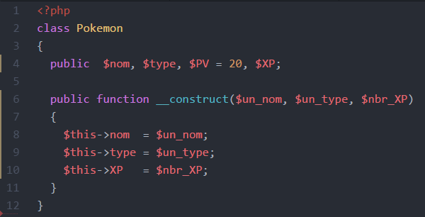
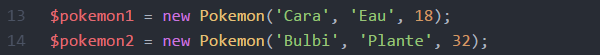
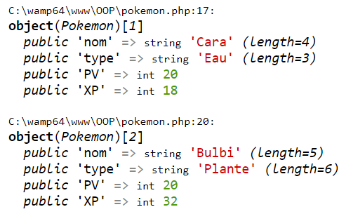

Un constructeur est une fonction appelée lors de l'instanciation d'un object
afin de le construire d'une certaine manière.
Il s'agit de la fonction __construct().
Reprenons encore et toujours la classe Pokemon. Ajoutons un constructeur afin de pouvoir créer des pokémons avec des attributs différents, sauf les PV, toujours = à 20 à l'instanciation :  On peut ensuite créer des pokémon différents :  Et lorsqu'on fait un var_dump de pokemon1 et pokemon2, on obtient ceci : 